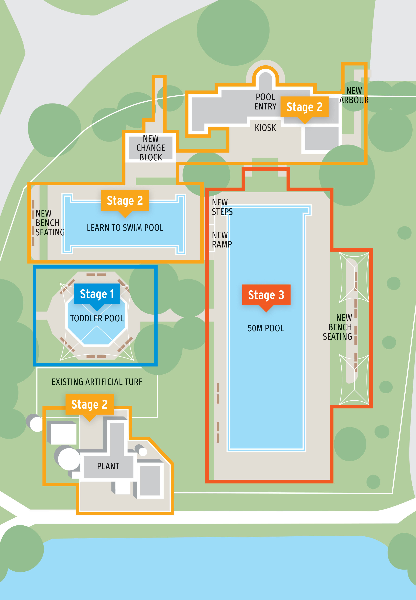

|
||||
|
|
||||
State funding grantedOur $3 million funding application to the Victorian Government’s Regional Community Sports and Infrastructure fund for the heritage-listed Maryborough Olympic Outdoor Pool Complex has been successful. This follows the Federal Government’s $4.5 million funding announcement in April. Council will co-contribute a further $1.5 million ($150,000 in the 2025-26 Annual Budget and $1.35 million in future borrowings in the 2026-27 Annual Budget) to the project. To meet the requirements of the Victorian Government’s Regional Community Sports and Infrastructure fund, and to give Council the best chance of being successful, the application included a new, extended project scope - including equal access upgrades - and a staged approach to the project. Central Goldfields Shire Mayor Cr Grace La Vella said the announcement was fantastic news and a significant milestone towards the re-opening of this heritage-listed, much-loved community asset. "We know our community would love to see the Maryborough Olympic Outdoor Pool Complex rebuilt and re-opened for the community to use once again and as of this week – we now have a large chunk of the money needed to make this a reality. Adding additional scope to the project such as the intermediate pool upgrades and improved equal access facilities – has increased the overall project cost – however it will deliver a more comprehensive upgrade of the Complex." "This staged approach will also allow us to renegotiate with the contractor the opening of the octagonal and intermediate/learn to swim pools until such time as the 50-metre pool is rebuilt." “Community support for the project was also a key part of our funding application, and we thank the newly established Friends of the Maryborough Outdoor Pool Precinct for their collaboration and advocacy which formed part of the funding application." "This is a large and complex multi-year project, which officers have been planning for several years. The appropriate staging and sequencing of each section of the project has been meticulously designed to ensure we build a compliant and fit-for-purpose contemporary facility for current and future generations to enjoy for years to come." "Our Project Management team can now continue to work through planning and scoping of stage one of the project. We look forward to sharing further information regarding the project including consulting with the community in the coming months."
A more detailed breakdown of the staged renovation is available on the Central Goldfields Council website
here.  Funding breakdownTo date, $9 million has been secured for the project:
The estimated cost is now increased to around $14 million due to the following factors:
Stage 1 (completed)
Stage 2 (current)
Stage 3Include:
|
||||
|
|

{kind=link}